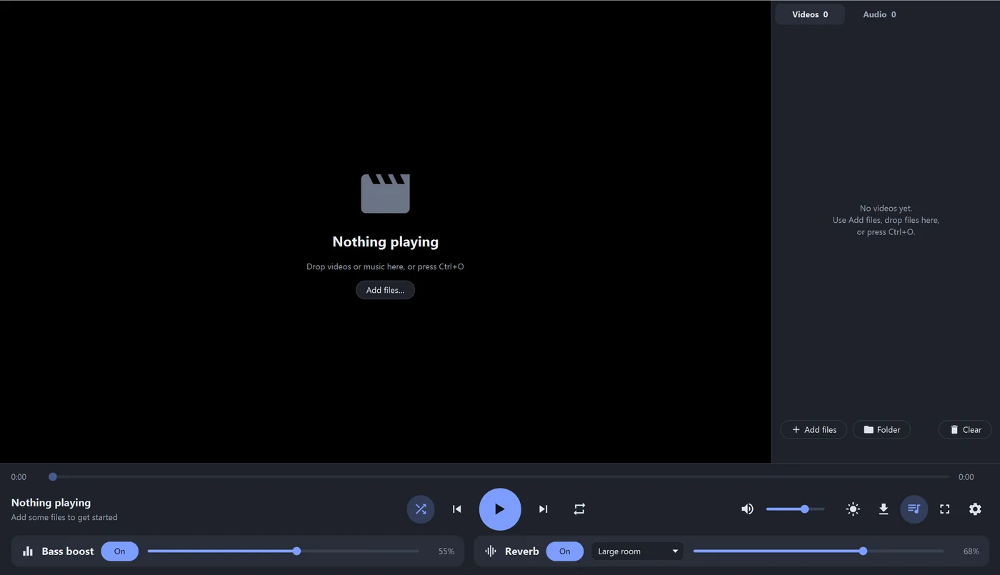
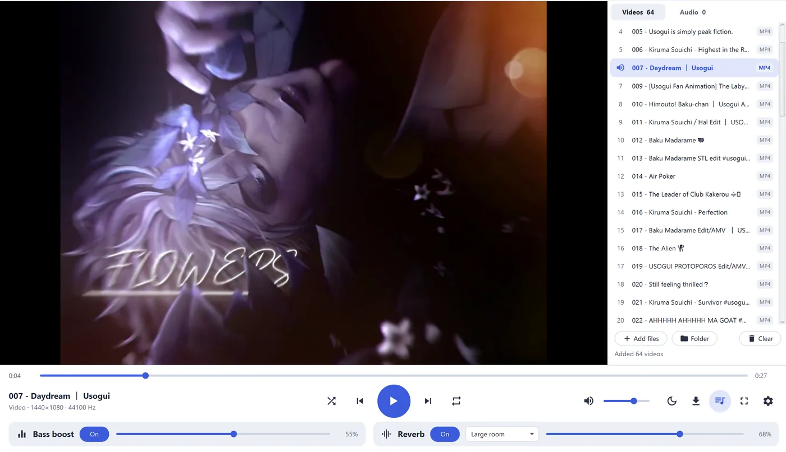
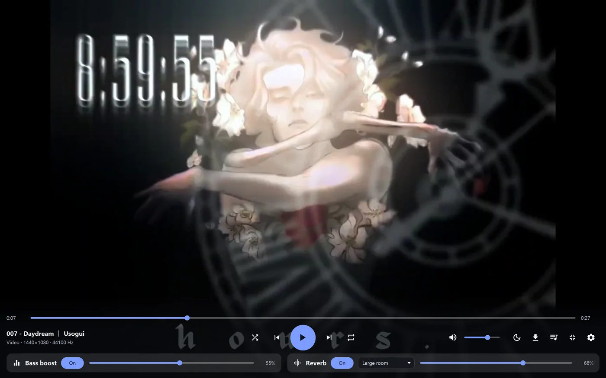
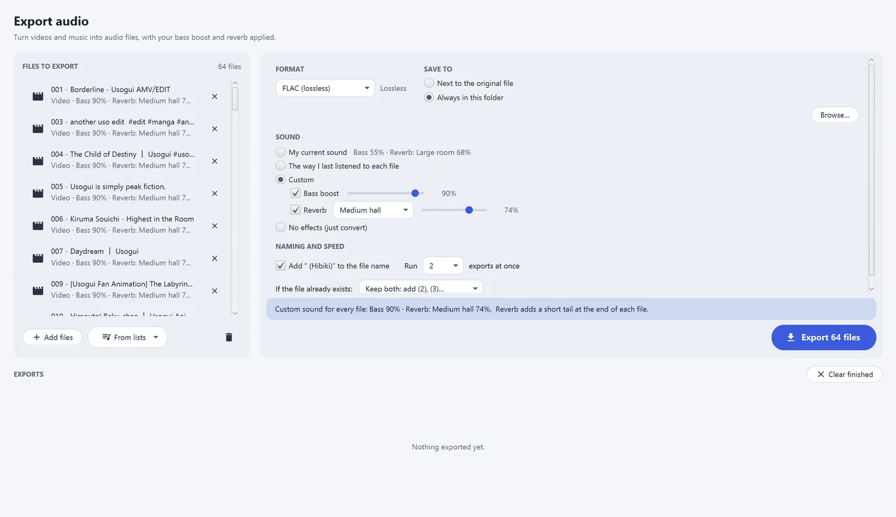

Hibiki
Desktop player with audio effects
Hibiki is a desktop application built with JavaFX. It brings the audio effects from Beatzyy to the desktop and applies them in real time to video as well as music, and it includes an export section for saving audio files with your effects applied.
- Desktop
- JavaFX
- GitHub Releases
Features
- The audio effects from Beatzyy, including bass boost and reverb with room presets.
- Effects applied in real time to video playback as well as audio.
- Video and audio playlists, with files added by button, folder or drag and drop.
- Shuffle, repeat, volume, full screen and light and dark themes.
- Export section that turns videos and music into audio files with your effects applied.
- Export choices for format, save location, naming and what to do if a file already exists.
- Several exports can run at once.
Screenshots

Player 
Playing a video 
Full screen 
Export audio
Download
GitHub Releases is the official source. The mirrors are the same files, for when the main link does not work for you.
Availability
- Platform
- Desktop
- Built with
- JavaFX
- Download
- GitHub Releases
Looking for the Android music player? See Beatzyy.